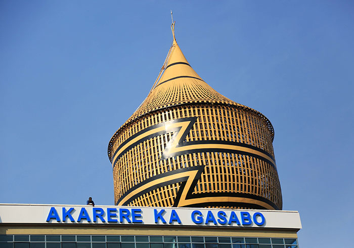

|

|
GASABO DISTRICT
Gasabo is a district (akarere) in Kigali city, the capital of Rwanda.
The headquarter of Gasabo is located in Remera Sector.
The district also includes large areas of the city itself,
including Kacyiru, Kimironko, Remera, Nyarutarama and Kimihurura.
The district is the location of the Gisozi Genocide Memorial Site,
the burial place of approximately 300,000 victims of the 1994
Genocide against Tutsis . In addition to the cemetery,
the memorial has a related genocide exhibition area and
library and has plans to develop a teaching centre on the history of the genocide.
|

|
KIMIHURURA SECTOR
Kimihurura is a sector(umurenge) in Gasabo district in Kigali city,
the capital of Rwanda.
The headquarter of Kimihurura is located in
Rugando Cell(akagari).
Kimihurura Sector Office is a town hall in Kigali, Rwanda.
Kimihurura Sector Office is situated nearby to Kimihurura
Police Station and the convention center Kigali Convention Centre.
This sector has three cells : Rugando, Kamukina and Kimihurura.
In kimihurura sectore we have different infrastructres like
hotels,schools,goverment office,roads etc.
|